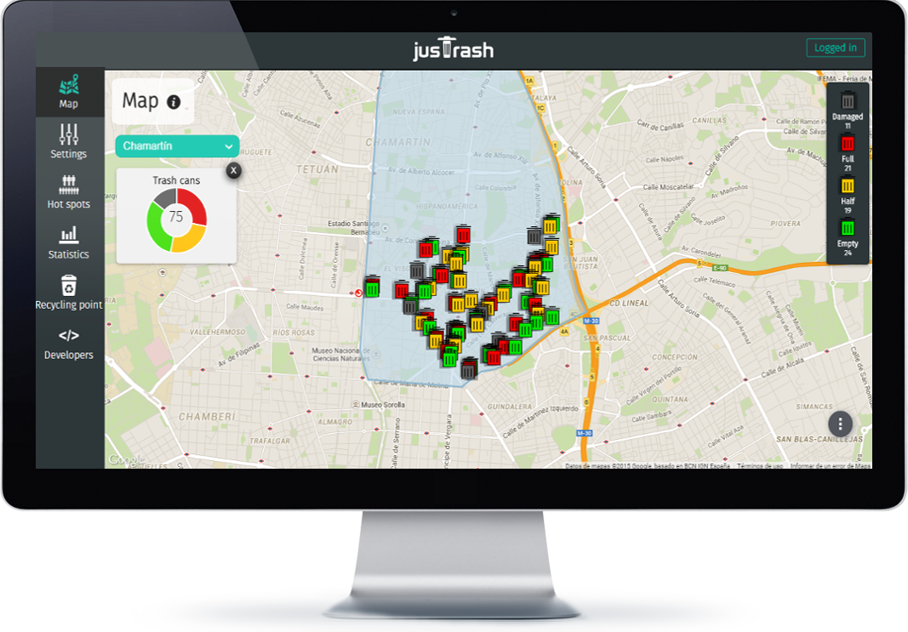

WHAT IS JUSTRASH?
jusTrash offers cities an efficient and smart way to collect trash, enabling it not only to save money and help the environment, but to collect really valuable data to help cities get smarter, and allow better decision making.
Our system uses sensors to see how full a trash can is. Whenever someone throws something into the trash can, an update is sent to our servers.
The client can then access the data from our web service, and obtain the most efficient pick up routes, district by district.
The settings of our sensors can be customised to fit a city’s, and the admin can decide when he wants a trash can to appear as full.